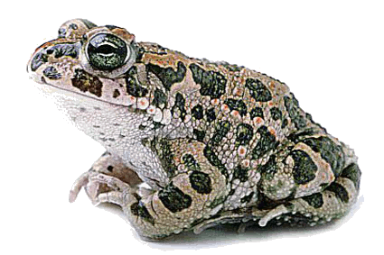

<body text="#000000" bgcolor="#FFFFFF" background="bg311.gif">

ЖАБА ЗЕЛЁНАЯ (Bufo viridis) окрашена сверху в светло-серо-оливковые тона с крупными темно-зелеными пятнами, отороченными узкой черной каймой. Кожа бугорчатая, по бокам головы два крупных скопления ядовитых желез — паротиды. Распространена в Европе, Северной Африке, в Европейской части бывшего СССР, в Крыму, на Кавказе, в Казахстане, в Средней Азии, Иране, Турции, Афганистане, на восток идет до Алтая, Западной Монголии, Западного Китая. У Балтийского моря доходит на севере до 59° с. ш., а на востоке ареала до 50° с. ш. Широко распространена в полупустынях, степях и широколиственных лесах, идет до северной границы смешанных лесов. Дальше других земноводных проникает в пустыни, высоко поднимается и в горы. В Гималаях найдена на высоте до 4500 м. Максимальные размеры зеленой жабы — 140 мм. На Кавказе, в зоне оптимума для этого вида, средняя длина — 75 мм. К северу, югу, востоку, а возможно, и к западу размеры тела зеленых жаб уменьшаются. Несмотря на широкое распространение, зеленая жаба обладает качествами, характеризующими ее как южное животное. Так, ее мышечная ткань отличается значительной теплоустойчивостью, и лучше всего этот вид в опытных условиях чувствует себя при 33°. Зеленая жаба ведет наземный образ жизни, проводя в водоемах лишь незначительное время в период икрометания. Занимает наиболее сухие места обитания, недоступные другим земноводным. Специальными наблюдениями установлено, что 91% зеленых жаб встречался в местах, где влажность припочвенного слоя воздуха равна 51—90%. При более высокой влажности— от 91 до 100% — встречено лишь 9% этих животных. Приспособленность к существованию в сухих местах обитания развивается у земноводных в двух направлениях: они обладают меньшей проницаемостью кожи для воды и способны терять большое количество влаги без вреда для организма. Проницаемость кожи для воды у зеленой жабы в 2 раза меньше, чем у остромордой лягушки, и в 3 раза меньше, чем у травяной. Зеленые жабы переносят потерю воды, равную 50% веса их тела, тогда как травяные лягушки погибают, потеряв воду в количестве 15% от веса тела. Проникновение воды через кожу регулируется консистенцией слизи, покрывающей ее. При недостатке влаги в окружающей среде кожа земноводных покрывается тонкой сухой, блестящей пленочкой, малопроницаемой для воды. Зеленая жаба ведет ночной или сумеречный образ жизни, выбирая для этого самое влажное время суток. Вышедшие на охоту животные часто «купаются» в водоемах или в росе, пополняя запасы воды в теле. Летом зеленые жабы начинают кормиться около 8 часов вечера. К 11—12 часам ночи их желудки бывают максимально наполнены. Осенью жабы выходят на охоту уже в 5 часов вечера. Иногда они активны и днем. Все корма зеленая жаба добывает на суше. Лишь 0,1% от общего числа пищевых объектов приходится на долю водных организмов. В Предкавказье ведущую роль в питании этого вида играют жуки, клопы, гусеницы и муравьи. В Армении почти половина пищевых объектов представлена жуками, большое значение имеют личинки мух, уховертки, гусеницы, клопы. В Дагестане 40% из числа всех съеденных животных составляют жуки, 22% — прямокрылые, 11% — клопы и 11% — муравьи. Летающих насекомых зеленая жаба добывает очень редко. Это связано с тем, что охотящиеся жабы передвигаются небольшими прыжками; создается впечатление, что животное идет «шажками». Из-за относительно коротких задних ног с менее развитой мускулатурой жаба не в состоянии делать сильных прыжков, устремляясь за добычей. У жабы малоподвижный язык, на значительном протяжении прикрепленный ко дну ротовой полости, способен лишь немного вываливаться набок. Его движения не могут компенсировать малую подвижность животного. Угол, образуемый телом и горизонтальной поверхностью, у жаб невелик. Это также способствует тому, что они берут добычу в «нижнем ярусе», с земли. Единственное средство защиты этого небыстро передвигающегося животного — ядовитые железы. Кожа спинной стороны тела жаб несет две крупные околоушные ядовитые железы — паротиды и множество мелких одиночных ядовитых желез. Ядовитые железы жаб лишены аппаратов, позволяющих наносить ранения и вводить свои выделения непосредственно в кровь, следовательно, ядовитые железы жаб пассивные. Мелкие одиночные ядовитые железы имеют открытый выводной проток. Когда хищник, преследующий жабу, хватает ее, из всех малых ядовитых желез рефлекторно выделяются вещества с резким специфическим запахом, чрезвычайно горьким ВКУСОМ, жгучим и рвотным действием. Нападающее животное оказывается вынужденным бросить жертву. До тех пор пока жаба не схвачена, как бы ее ни преследовали, выделения из желез не происходит. Протоки околоушных желез закрыты особыми пробками, препятствующими выделению секрета наружу. Это оказывается возможным только при надавливании на железу. Выделения околоушных желез, попав в организм хищника, отравляют его. Их защитное значение оказывается особенно велико в период спячки, когда все рефлекторные реакции резко понижаются и деятельность малых ядовитых желез сводится до минимума. Околоушные железы, выделяя яд при надавливании на них, действуют независимо от физиологического состояния организма. Для человека ядовитые выделения наших жаб не опасны. В пустынях у зеленой жабы, видимо, хорошо выражена летняя спячка, нередко переходящая в зимнюю. На зимовку она уходит раньше многих земноводных, вслед за чесночницами. Севернее и в горах активность ее прекращается раньше. Зеленые жабы начинают уходить на зимовку, когда среднесуточная температура воздуха снижается до 7—8°, и исчезают полностью, когда она снизится до 3—4°. Зимуют там же, где скрываются днем: в норах грызунов, ямах, под камнями, в щелях стен, зарываются в рыхлую землю на глубину 10—12 см. Спячку проводят поодиночке, иногда по 3—4 особи вместе. В Армении одиночные выходы зеленых жаб наблюдаются при среднесуточной температуре 3—9°; массовое появление происходит только с повышением ее до 15 — 16°. В окрестностях Еревана это происходит в конце марта — в начале апреля, выше в горах и на северных границах распространения вида — в конце апреля — в мае. Средняя продолжительность зимовки — 185 дней; в окрестностях Еревана, на высоте 980 м, — 120 —130 дней; в окрестностях Севана, на высоте 1940 м,— 175-180 дней. Проснувшись, зеленые жабы приступают в размножению. В это время половозрелые особи скапливаются в водоемах. В Армении жабы достигают половозрелости на 4-й год. В это время длина их 50—55 мм. У самца, обнимающего самку при спаривании, кисти лап помещаются у нее под мышками. Брачные мозоли расположены на трех средних пальцах передних лап и по размерам уступают этим образованиям у лягушек. Отметав икру, жабы покидают водоем. Откладка икры разными особями происходит неодновременно, и благодаря этому икрометание растягивается до июля, а иногда и до августа. Кладка в виде шнура, в котором яйца расположены двумя рядами. Общая длина шнура может доходить до 7 м, а количество яиц в одной кладке достигает 12 800 штук. Яйцеклетки сравнительно мелки, диаметр их 1 — 1,5 мм. Икра откладывается около берега в самых разнообразных водоемах. Шнуры оплетают подводные предметы или лежат на дне. При средней температуре воды 23° головастики вылупляются на 5 — 6-й день, достигая 6—7 мм. Сначала они прикрепляются к студенистой массе шнуров, а затем к подводной растительности и другим предметам. Через 3—4 дня у них прорывается рот и они начинают интенсивно питаться. Переходя к активному образу жизни, головастики держатся на дне и в связи с этим отличаются приплюснутой в спинно-брюшном направлении формой тела. Передний отдел головы у них несколько вытянут в хобот, а ноздри и глаза сближены и отодвинуты назад. Эти особенности строения, видимо, связаны с тем, что они роются на дне в иле. Органы боковой линии у них развиты лучше, чем у головастиков лягушек, особенно зеленых. Их небольшой хвостовой плавник почти одинаков по ширине на всем протяжении и лишь слегка суживается к концу. Несмотря на то, что головастики жаб, ведущие придонный образ жизни, обитают в условиях недостатка кислорода, наружные жабры у них коротки и не ветвятся. Видимо, это связано с их роющим образом жизни. Однако сеть кровеносных сосудов в хвостовом плавнике у них значительно гуще, чем у головастиков других видов. Это особенно важно, так как легочное дыхание у них включается поздно. Для них также характерна меньшая, чем у других видов, потребность в кислороде. Головастики зеленой жабы могут жить в температурных пределах от 1° до 45. О питании их имеются отрывочные сведения, указывающие на то, что они поедают диатомовые и зеленые водоросли, гниющие остатки растений и животных, но предпочитают животную пищу. Ведут дневной образ жизни. Головастики зеленой жабы отличаются самым быстрым развитием среди всех наших бесхвостых земноводных. На 5-й день у них исчезают наружные жабры, на 20-й появляются почки задних конечностей, на 30-й задние конечности разделяются на суставы, на 38-й появляются передние конечности, на 39-й начинается резорбция хвоста. Растут головастики не очень быстро. Средний прирост за день равен 0,8 мм. Длина перед метаморфозом составляет только 53% от длины взрослой самки. В естественных условиях развитие длится 45—55 дней при средней температуре воды 21,5°, а при температуре 24,8°—55—60 дней. Размеры метаморфизировавших сеголеток достигают 14 — 16 мм. В зоне оптимума половозрелость наступает в среднем при длине в 57 мм. По краям ареала — раньше (42—57 мм), так как рост здесь идет, как правило, более энергично. После наступления половозрелости рост в оптимальных условиях продолжается еще долго, и животное достигает больших размеров. Чем дальше от оптимума, тем резче затормаживается рост, и в итоге образуются популяции из более мелких особей. 